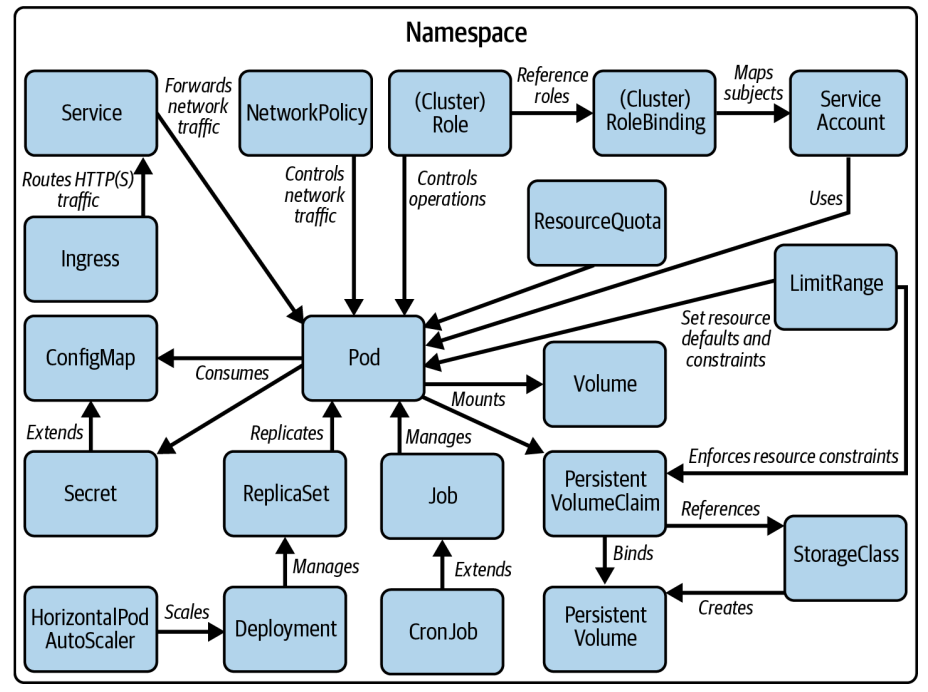

1minikube start
2minikube dashboard
3minikube pause
4minikube unpause
5minikube stop
6minikube config set memory 9001
7minikube addons list
8minikube delete --all
https://kubernetes.io/docs/reference/generated/kubectl/kubectl-commands
https://docs.linuxfoundation.org/tc-docs/certification/tips-cka-and-ckad#cka-and-ckad-environment
Remember to switch to the context and namespace of the question
1kubectl config set-context <context-of-question> --namespace=<namespace-of-question>
2kubectl config use-context <context-of-question>
3kubectl config set-context --current --namespace=<namespace>
kubectl comes with k alias and auto completitions:1 # add to your bash shell.
2echo "alias k=kubectl" >> ~/.bashrc
3echo "complete -o default -F __start_kubectl k" >> ~/.bashrc
https://kubernetes.io/docs/reference/kubectl/quick-reference/#kubectl-autocomplete
1kubectl api-resources # returns list
2
3kubectl describe pvc my-claim # example for persistentVolumeClaim
learn the text editor: vim (default) or nano
1KUBE_EDITOR="nano" kubectl edit svc/registry
1alias k='kubectl'
2alias kgp='kubectl get pods'
3alias kgs='kubectl get svc'
4alias kgn='kubectl get nodes'
5alias kdp='kubectl describe pod'
6alias kds='kubectl describe svc'
7alias kdn='kubectl describe node'
8alias kl='kubectl logs'
9alias kgpns='kubectl get pods --namespace'
10
11alias ke='kubectl explain'
12alias kg='kubectl get'
13alias kd='kubectl describe'
--now:1kubectl delete pod frontend --now
--dry-run=client (without contacting the server) or --dry-run=server (contacting the API server), edit it and apply (using imperative commands is the most efficient and quick way to manage objects):1kubectl run frontend --image=nginx:1.25.1 --port=80 -o yaml --dry-run=client > pod.yaml
2vim pod.yaml
3kubectl apply -f pod.yaml
4# also valid for other types of resources `kubectl create ns my-namespace --dry-run=client -o yaml`
--dry-run=server shows explicitly the applied default values by the API server. I think it can be useful if you have to edit a field but don't remember exactly where it is located or the exact name. It is slower to execute than --dry-run=client
check syntax of yaml manifest using --dry-run=client:
1kubectl apply -f pod.yaml --dry-run=client
kubectl explain if you want to see al the available fields1kubectl explain pod.spec.containers.readinessProbe --recursive
2kubectl explain LimitRange --recursive
